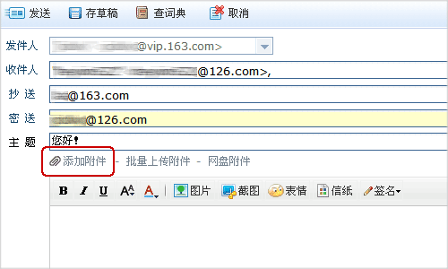
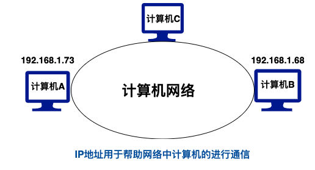
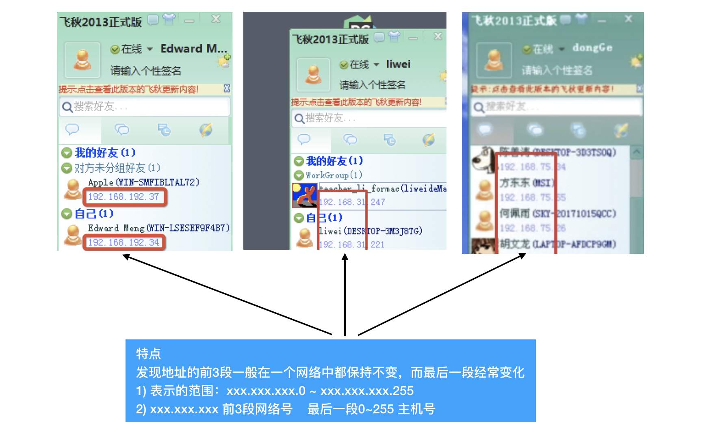
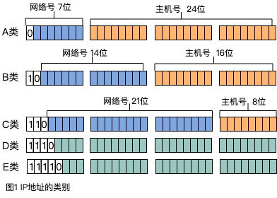

02-IP地址¶
目标¶
- 知道 IP 地址是用于标识网络上唯一的一台主机
- 能够说出IPv4和IPv6的区别
1. 什么是地址¶

地址就是用来标记地点的
2. IP地址的概念¶
IP 地址是指互联网协议地址（英语：Internet Protocol Address，又译为网际协议地址）, 是IP Address的缩写。IP 地址是IP协议提供的一种统一的地址格式.
IP 地址被用来给 Internet 上的电脑一个编号。大家日常见到的情况是每台联网的PC上都需要有 IP 地址, 才能正常通信。我们可以把 "个人电脑" 比作 "一台电话"，那么 "IP地址" 就相当于 "电话号码".
3. IP地址的作用¶
ip地址：用来在网络中标记一台电脑，是网络设备为网络中的每台计算机分配的一个唯一标识。
比如192.168.1.1；在本地局域网上是唯一的。


3. IP地址的分类（了解）¶
生活中我们说的IP地址，通常指的是 IPv4(IP协议的第4个版本)
每一个IP地址包括两部分：网络号和主机号

- A类IP地址
一个A类IP地址由1字节的网络地址和3字节主机地址组成，网络地址的最高位必须是“0”，
地址范围1.0.0.1-126.255.255.254
二进制表示为：00000001 00000000 00000000 00000001 - 01111110 11111111 11111111 11111110
可用的A类网络有126个，每个网络能容纳1677214个主机
- B类IP地址
一个B类IP地址由2个字节的网络地址和2个字节的主机地址组成，网络地址的最高位必须是“10”，
地址范围128.1.0.1-191.255.255.254
二进制表示为：10000000 00000001 00000000 00000001 - 10111111 11111111 11111111 11111110
可用的B类网络有16384个，每个网络能容纳65534主机
- C类IP地址
一个C类IP地址由3字节的网络地址和1字节的主机地址组成，网络地址的最高位必须是“110”
范围192.0.1.1-223.255.255.254
二进制表示为: 11000000 00000000 00000001 00000001 - 11011111 11111111 11111110 11111110
C类网络可达2097152个，每个网络能容纳254个主机
C类地址中，一般xxx.xxx.xxx.0 和 xxx.xxx.xxx.255 两个IP地址有特殊用法
所以理论上：xxx.xxx.xxx.0 ~xxx.xxx.xxx.255 能容纳256台主机，但是因为2个IP地址不能使用，所以最多能容纳254台
主机全零（“0.0.0.0”）地址对应于当前主机。
全“1”的IP地址（“255.255.255.255”）是当前子网的广播地址。
- D类地址用于多点广播
D类IP地址第一个字节以“1110”开始，它是一个专门保留的地址。
它并不指向特定的网络，目前这一类地址被用在多点广播（Multicast）中
多点广播地址用来一次寻址一组计算机
地址范围224.0.0.1-239.255.255.254
- E类IP地址
以“1111”开始，为将来使用保留
E类地址保留，仅作实验和开发用
3.2 私有ip¶
在这么多网络IP中，国际规定有一部分IP地址是用于我们的局域网使用，也就
是属于私网IP，不在公网中使用的，它们的范围是：
10.0.0.0～10.255.255.255 (内网，虚拟机中常出现，A类)
172.16.0.0～172.31.255.255(内网、子网，B类)
192.168.0.0～192.168.255.255(内网、子网，C类)
3.3 注意¶
特殊的IP地址：127.0.0.1
127.0.0.1可以代表本机IP地址，用
http://127.0.0.1就可以测试本机中配置的Web服务器
特殊的域名：localhost
localhost 是本机域名，用来解析到 本机127.0.0.1 ip地址上
4. 理解网络中两台计算机通信过程¶

5. IPv4和IPv6 【了解】¶
IPv4，是互联网协议（Internet Protocol，IP）的第四版，也是第一个被广泛使用，构成现今互联网技术的基石的协议。采用“点分十进制”表示(如:192.168.1.100),一共有2^32-1个，估算约为42.9亿个，除去一些特用的IP和一些不能用的IP，剩下可用的不到40亿。IPv4发展到现在，最大的问题是网络地址严重不足
IPv6是Internet Protocol Version 6的缩写，其中Internet Protocol译为“互联网协议”。IPv6是IETF（互联网工程任务组，Internet Engineering Task Force）设计的用于替代现行版本IP协议（IPv4）的下一代IP协议。采用“冒号分十六进制”表示(如：2031:0000:1F1F:0000:0000:0100:11A0:ADDF)，而IPv6中IP地址的长度为128，即有2^128-1个地址，号称能够为“地球上每一粒沙子分配一个IP地址”
IPv6 支持测试：http://test-ipv6.com/
上海交通大学IPv6站 : http://ipv6.sjtu.edu.cn/